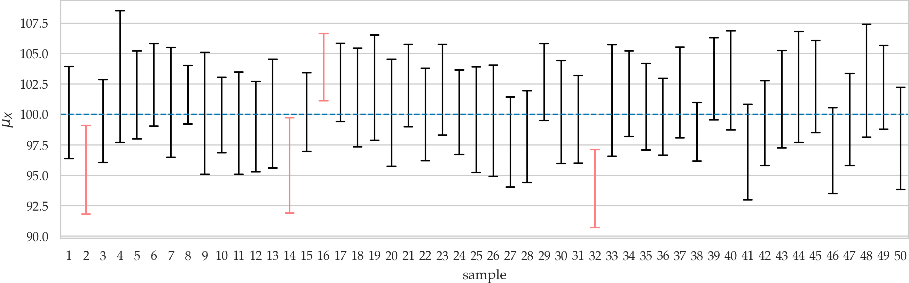

Section 3.2 — Confidence intervals#
This notebook contains the code examples from Section 3.2 Confidence intervals of the No Bullshit Guide to Statistics. Use the “rocket” icon at the top-right to make the code cells interactive (Live Code), or run this notebook an ephemeral JupyterLab cloud instance (Binder).
Notebook setup#
%pip install -q numpy scipy seaborn pandas
[notice] A new release of pip is available: 26.0 -> 26.0.1
[notice] To update, run: pip install --upgrade pip
Note: you may need to restart the kernel to use updated packages.
# load Python modules
import os
import numpy as np
import pandas as pd
import seaborn as sns
import matplotlib.pyplot as plt
# Plot helper functions
from ministats import plot_pdf
# Figures setup
plt.clf() # needed otherwise `sns.set_theme` doesn't work
sns.set_theme(
context="paper",
style="whitegrid",
palette="colorblind",
rc={"font.family": "serif",
"font.serif": ["Palatino", "DejaVu Serif", "serif"],
"figure.figsize": (10, 3)},
)
%config InlineBackend.figure_format = 'retina'
<Figure size 640x480 with 0 Axes>
# Download datasets/ directory if necessary
from ministats import ensure_datasets
ensure_datasets()
datasets/ directory already exists.
# Simple float __repr__
if int(np.__version__.split(".")[0]) >= 2:
np.set_printoptions(legacy='1.25')
# set random seed for repeatability
np.random.seed(42)
\(\def\stderr#1{\mathbf{se}_{#1}}\) \(\def\stderrhat#1{\hat{\mathbf{se}}_{#1}}\) \(\newcommand{\Mean}{\textbf{Mean}}\) \(\newcommand{\Var}{\textbf{Var}}\) \(\newcommand{\Std}{\textbf{Std}}\) \(\newcommand{\Freq}{\textbf{Freq}}\) \(\newcommand{\RelFreq}{\textbf{RelFreq}}\) \(\newcommand{\DMeans}{\textbf{DMeans}}\) \(\newcommand{\Prop}{\textbf{Prop}}\) \(\newcommand{\DProps}{\textbf{DProps}}\)
(this cell contains the macro definitions like \(\stderr{\overline{\mathbf{x}}}\), \(\stderrhat{}\), \(\Mean\), …)
Definitions#
Review of estimators#
Recall all the estimators (functions that take samples as inputs) we defined in the previous section.
def mean(sample):
return sum(sample) / len(sample)
def var(sample):
xbar = mean(sample)
sumsqdevs = sum([(xi-xbar)**2 for xi in sample])
return sumsqdevs / (len(sample)-1)
def std(sample):
s2 = var(sample)
return np.sqrt(s2)
def dmeans(xsample, ysample):
dhat = mean(xsample) - mean(ysample)
return dhat
Interpreting confidence intervals#
Illustration of 90% confidence intervals for the population mean. The plot shows confidence intervals \(\ci{\theta,0.9,1}\), \(\ci{\theta,0.9,2}\), \(\ci{\theta,0.9,3}\), \(\ldots\), \(\ci{\theta,0.9,50}\), which we computed from 50 different samples of size \(n=20\) taken from the population \(X \sim \mathcal{N}(100,10)\). The true population mean is \(\mu_X = 100\). Intervals that don’t include \(\mu_X\) are drawn in light red.

Confidence interval constructions#
Ingredients:
knowledge of the sampling distribution \(\widehat{\Theta}\) of the estimator
knowledge of the inverse cumulative distribution function (inverse-CDF) of the sampling distributions \(F^{-1}_{\widehat{\Theta}}\)
Procedure:
calculate the \(\tfrac{\alpha}{2}\)-quantile, \(F^{-1}_{\widehat{\Theta}}(\tfrac{\alpha}{2})\), and the \((1-\tfrac{\alpha}{2})\)-quantile, \(F^{-1}_{\widehat{\Theta}}(1-\tfrac{\alpha}{2})\) of the sampling distribution
use a pivotal quantity to convert the quantiles of the sampling distribution and obtain the lower bound and upper bounds of the confidence interval
Recall the two methods for approximating sampling distributions: analytical approximation formulas (based on probability distributions) and the bootstrap estimation procedure (based on computation), which we learned in Section 3.1. We’ll now learn how to compute confidence intervals based on these approximation methods.
Bootstrap confidence intervals#
np.random.seed(42)
xsample = [1,2,3,4,5]
mean(xsample)
3.0
from ministats import gen_boot_dist
xbars_boot = gen_boot_dist(xsample, estfunc=mean, B=100)
xbars_boot[0:5] # first five bootstrap means
[4.4, 3.2, 3.6, 3.2, 2.6]
[np.percentile(xbars_boot,5),
np.percentile(xbars_boot,95)]
[1.8, 4.2]
[np.quantile(xbars_boot,0.05),
np.quantile(xbars_boot,0.95)]
[1.8, 4.2]
Analytical approximations#
from scipy.stats import norm
rvZ = norm(loc=0, scale=1)
z_u = rvZ.ppf(0.95)
z_u
1.6448536269514722
rvZ = norm(0, 1)
z_u = rvZ.ppf(0.95)
z_u
1.6448536269514722
Default parameters#
rvZ = norm()
z_u = rvZ.ppf(0.95)
z_u
1.6448536269514722
Class methods#
z_u = norm.ppf(0.95, loc=0, scale=1)
z_u
1.6448536269514722
z_u = norm.ppf(0.95)
z_u
1.6448536269514722
Construct 90% confidence interval for the Z distribution#
alpha = 0.1
z_l = norm.ppf(alpha/2)
z_u = norm.ppf(1-alpha/2)
[z_l, z_u]
[-1.6448536269514729, 1.6448536269514722]
Other standard reference distributions#
Just call class method, since by default loc=0 and scale=1.
# 95th percentile of the t distribution
from scipy.stats import t as tdist
rvT = tdist(df=6, loc=0, scale=1)
rvT.ppf(0.95)
1.9431802805153022
# 95th percentile of the chi-square distribution
from scipy.stats import chi2
rvQ = chi2(df=6, loc=0, scale=1)
rvQ.ppf(0.95)
12.591587243743977
Confidence interval for the population mean#
To build a \((1-\alpha)\) confidence interval, we first calculate the \(\frac{\alpha}{2}\) and \((1-\frac{\alpha}{2})\) quantiles of Student’s \(t\)-distribution:
Example 1: confidence interval for the mean apple weight#
apples = pd.read_csv("datasets/apples.csv")
asample = apples["weight"]
asample.values
array([205., 182., 192., 189., 217., 192., 210., 240., 225., 191., 193.,
209., 167., 183., 210., 198., 239., 188., 179., 182., 200., 197.,
245., 192., 201., 218., 198., 211., 208., 217.])
The sample mean is:
abar = mean(asample)
abar
202.6
Analytical confidence interval for the mean#
n = asample.count()
asehat = std(asample) / np.sqrt(n)
n, abar, asehat
(30, 202.6, 3.3959407817427336)
from scipy.stats import t as tdist
rvT = tdist(df=n-1)
t_05 = rvT.ppf(0.05)
t_95 = rvT.ppf(0.95)
[abar + t_05*asehat, abar + t_95*asehat]
[196.82986523723363, 208.37013476276636]
We would normally report this interval as \([197, 208]\) without too many decimals.
Bootstrap confidence interval for the mean#
np.random.seed(50)
# generate the bootstrap distribution of the mean
abars_boot = gen_boot_dist(asample, estfunc=mean)
# construct the confidence interval
[np.percentile(abars_boot,5),
np.percentile(abars_boot,95)]
[197.23333333333332, 208.26666666666668]
Reusable procedure#
def ci_mean(sample, alpha=0.1, method="a"):
"""
Compute confidence interval for the population mean.
- method="a" analytical approx. based on Student's t-dist
- method="b" approx. based on bootstrap estimation
"""
assert method in ["a", "b"]
if method == "a": # analytical approximation
from scipy.stats import t as tdist
n = len(sample)
xbar = np.mean(sample)
sehat = np.std(sample, ddof=1) / np.sqrt(n)
t_l = tdist(df=n-1).ppf(alpha/2)
t_u = tdist(df=n-1).ppf(1-alpha/2)
return [xbar + t_l*sehat, xbar + t_u*sehat]
elif method == "b": # bootstrap estimation
xbars_boot = gen_boot_dist(sample, estfunc=mean)
return [np.quantile(xbars_boot, alpha/2),
np.quantile(xbars_boot, 1-alpha/2)]
# ALT.
# from ministats import ci_mean
Verify coverage probability#
np.random.seed(42)
N = 100 # change to N=1000 for more accuracy
n = 20
from scipy.stats import norm
muK = 1000
sigmaK = 10
rvK = norm(muK, sigmaK)
acount, bcount = 0, 0
for j in range(0, N):
ksample = rvK.rvs(n)
cia = ci_mean(ksample, alpha=0.1, method="a")
if cia[0] <= muK <= cia[1]:
acount += 1
cib = ci_mean(ksample, alpha=0.1, method="b")
if cib[0] <= muK <= cib[1]:
bcount += 1
print("Coverage proportion of analytical approx. CIs:", acount/N)
print("Coverage proportion of bootstrap CIs:", bcount/N)
Coverage proportion of analytical approx. CIs: 0.89
Coverage proportion of bootstrap CIs: 0.86
Confidence interval for the population variance#
Example 2: confidence interval for the variance of apple weights#
apples = pd.read_csv("datasets/apples.csv")
asample = apples["weight"]
n = asample.count()
s2 = var(asample)
n, s2
(30, 345.9724137931035)
from scipy.stats import chi2
rvX2 = chi2(df=n-1, loc=0, scale=1)
q_05 = rvX2.ppf(0.05)
q_95 = rvX2.ppf(0.95)
[(n-1)*s2/q_95, (n-1)*s2/q_05]
[235.7592779198888, 566.5796548600426]
Bootstrap confidence interval for the variance#
np.random.seed(53)
# generate the bootstrap distribution of the variance
avars_boot = gen_boot_dist(asample, estfunc=var)
# construct the confidence interval
[np.percentile(avars_boot,5),
np.percentile(avars_boot,95)]
[196.387816091954, 480.82183908046]
Reusable procedure#
def ci_var(sample, alpha=0.1, method="a"):
"""
Compute confidence interval for the population variance.
- method="a" analytical approx. based on chi-square dist
- method="b" approx. based on bootstrap estimation
"""
assert method in ["a", "b"]
if method == "a": # analytical approximation
n = len(sample)
s2 = np.var(sample, ddof=1)
q_l = chi2(df=n-1).ppf(alpha/2)
q_u = chi2(df=n-1).ppf(1-alpha/2)
return [(n-1)*s2/q_u, (n-1)*s2/q_l]
elif method == "b": # bootstrap estimation
vars_boot = gen_boot_dist(sample, estfunc=var)
return [np.quantile(vars_boot, alpha/2),
np.quantile(vars_boot, 1-alpha/2)]
# ALT.
# from ministats import ci_var
Verify coverage probability#
np.random.seed(42)
N = 100 # change to N=1000 for more accuracty
n = 20
from scipy.stats import norm
muK = 1000
sigmaK = 10
rvK = norm(muK, sigmaK)
acount, bcount = 0, 0
for j in range(0, N):
ksample = rvK.rvs(n)
cia = ci_var(ksample, alpha=0.1, method="a")
if cia[0] <= sigmaK**2 <= cia[1]:
acount += 1
cib = ci_var(ksample, alpha=0.1, method="b")
if cib[0] <= sigmaK**2 <= cib[1]:
bcount += 1
print("Coverage proportion of analytical approx. CIs:", acount/N)
print("Coverage proportion of bootstrap CIs:", bcount/N)
Coverage proportion of analytical approx. CIs: 0.89
Coverage proportion of bootstrap CIs: 0.81
Confidence interval for the difference between means#
Example 3: confidence interval for difference in electricity prices#
eprices = pd.read_csv("datasets/eprices.csv")
pricesW = eprices[eprices["loc"]=="West"]["price"]
pricesE = eprices[eprices["loc"]=="East"]["price"]
The difference between sample means \(\hat{d} = \overline{\mathbf{x}}_W - \overline{\mathbf{x}}_E\) is:
dhat = dmeans(pricesW, pricesE)
dhat
3.0
The estimate \(\hat{d}\) will be the center of the confidence interval.
Now let’s compute the parameters we need to know to calculate the standard error of the sampling distribution.
# sample size and std in West and East
stdW, nW = pricesW.std(), pricesW.count()
stdE, nE = pricesE.std(), pricesE.count()
stdW, nW, stdE, nE
(1.5621388471508475, 9, 0.8776547030454391, 9)
# standard error
seD = np.sqrt(stdW**2/nW + stdE**2/nE)
seD
0.5972674401486562
# degrees of freedom
from ministats import calcdf
dfD = calcdf(stdW, nW, stdE, nE)
dfD
12.59281702723103
from scipy.stats import t as tdist
# calculate the quantiles of the t-distribution
rvT = tdist(df=dfD)
t_05 = rvT.ppf(0.05)
t_95 = rvT.ppf(0.95)
# construct the confidence interval
[dhat + t_05*seD, dhat + t_95*seD]
[1.9396575883681457, 4.060342411631854]
Bootstrap confidence interval#
# compute bootstrap estimates for mean in each group
np.random.seed(42)
meanW_boot = gen_boot_dist(pricesW, estfunc=mean)
meanE_boot = gen_boot_dist(pricesE, estfunc=mean)
# compute the difference between means of bootstrap samples
dmeans_boot = np.subtract(meanW_boot, meanE_boot)
# construct the confidence interval
[np.percentile(dmeans_boot,5),
np.percentile(dmeans_boot,95)]
[2.0666666666666664, 3.933888888888892]
Reusable procedure#
def ci_dmeans(xsample, ysample, alpha=0.1, method="a"):
"""
Compute confidence interval for the difference between population means.
- method="a" analytical approx. based on Student's t-dist
- method="b" approx. based on bootstrap estimation
"""
assert method in ["a", "b"]
if method == "a": # analytical approximation
stdX, n = np.std(xsample, ddof=1), len(xsample)
stdY, m = np.std(ysample, ddof=1), len(ysample)
dhat = np.mean(xsample) - np.mean(ysample)
seD = np.sqrt(stdX**2/n + stdY**2/m)
dfD = calcdf(stdX, n, stdY, m)
t_l = tdist(df=dfD).ppf(alpha/2)
t_u = tdist(df=dfD).ppf(1-alpha/2)
return [dhat + t_l*seD, dhat + t_u*seD]
elif method == "b": # bootstrap estimation
xbars_boot = gen_boot_dist(xsample, np.mean)
ybars_boot = gen_boot_dist(ysample, np.mean)
dmeans_boot = np.subtract(xbars_boot,ybars_boot)
return [np.quantile(dmeans_boot, alpha/2),
np.quantile(dmeans_boot, 1-alpha/2)]
# ALT.
# from ministats import ci_dmeans
Verify the coverage probability#
np.random.seed(42)
N = 100 # change to N=1000 for more accuracty
n = 20
from scipy.stats import norm
muX, muY = 120, 100
sigmaX, sigmaY = 10, 10
rvX = norm(muX, sigmaX)
rvY = norm(muY, sigmaY)
acount, bcount = 0, 0
for j in range(0, N):
xsample = rvX.rvs(n)
ysample = rvY.rvs(n)
cia = ci_dmeans(xsample, ysample, alpha=0.1, method="a")
if cia[0] <= muX - muY <= cia[1]:
acount += 1
cib = ci_dmeans(xsample, ysample, alpha=0.1, method="b")
if cib[0] <= muX - muY <= cib[1]:
bcount += 1
print("Coverage proportion of analytical approx. CIs:", acount/N)
print("Coverage proportion of bootstrap CIs:", bcount/N)
Coverage proportion of analytical approx. CIs: 0.85
Coverage proportion of bootstrap CIs: 0.84
Alternative calculation methods#
Using scipy.stats.bootstrap for confidence intervals#
One-sample bootstrap confidence interval#
from scipy.stats import bootstrap
np.random.seed(50)
res = bootstrap([asample], statistic=mean,
confidence_level=0.9, n_resamples=5000,
vectorized=False, method="percentile")
[res.confidence_interval.low,
res.confidence_interval.high]
[197.23333333333332, 208.26666666666668]
Note the result is the same as …
Using the function scipy.stats.bootstrap requires lots of keyword arguments,
because it is a very powerful tool you can use for all kinds of bootstrap calculations.
Let’s go over the arguments one by one:
Instead of giving the input
asampledirectly as the first argument, we pass in a list of length one[asample]which tells the function that we want a single-sample calculationstatistic: specify the estimator we want to compute confidence interval forconfidence_level: the confidence level \((1-\alpha)\)n_resamples: the number of bootstrap samples we want to generatevectorized=False: turns off vectorized inputs, which is a performance optimization that we don’t need for this calculationmethod="percentile": select the percentile bootstrap method, as opposed to one of the other bootstrap methods that are available
The bootstrap function returns a result object. We can access the attributes of this object to obtain the limits of the confidence interval. Note the result is identical to the bootstrap estimate we obtained from the function gen_boot_dist followed by np.percentile calculations.
Two-sample bootstrap confidence interval?#
# two-sample test `scipy.stats`
from scipy.stats import bootstrap
np.random.seed(42)
res = bootstrap([pricesW, pricesE], statistic=dmeans,
confidence_level=0.9, n_resamples=5000,
vectorized=False, method="percentile")
[res.confidence_interval.low,
res.confidence_interval.high]
[2.0666666666666664, 3.933888888888892]
Note the result is the same as …
Using statsmodels for confidence intervals#
The Python libraries statsmodels, scipy.stats, and pingouin
provide predefined functions for computing confidence intervals.
We’ll now show some of these “alternative computations”
based on predefined functions so you’ll learn a little bit
about the tools for statistical analysis that are available to you.
We’ll also use these alternative computations to confirm that the calculations we did from first principles are correct.
Note however these are “optional” reading materials, and you can skip
any code cells that start with an # ALT comment without loss of generality.
import statsmodels.stats.api as sms
sms.DescrStatsW(asample).tconfint_mean(alpha=0.1)
(196.82986523723363, 208.37013476276636)
Two-sample confidence intervals#
import statsmodels.stats.api as sms
statsW = sms.DescrStatsW(pricesW)
statsE = sms.DescrStatsW(pricesE)
cm = sms.CompareMeans(statsW, statsE)
cm.tconfint_diff(alpha=0.1, usevar="unequal")
(1.9396575883681464, 4.060342411631853)
Note the result is the same as …
In the above code example, the functions sms.DescrStatsW compute the descriptive statistics
for the two samples, then sms.CompareMeans performs the comparison of means statistical analysis.
We call the method tconfint_diff to extract the 90% confidence interval from the result.
As you can see,
the numbers we obtain from the statsmodels
is exactly the same as the confidence interval we computed manually.
Using pingouin for confidence intervals#
import pingouin as pg
pg.compute_bootci(asample, func=mean,
confidence=0.9, n_boot=5000,
method="per", seed=50)
array([197.27, 208.3 ])
import pingouin as pg
res = pg.ttest(pricesW, pricesE, confidence=0.9, correction=True)
res["CI90%"].values[0]
array([1.93965759, 4.06034241])
Note the results are the same as …
Explanations#
One-sided confidence intervals#
# TODO add code example
Point and interval estimates#
terminology…
Frequentist interpretation#
Guarantees for confidence intervals given in terms of \(\mathbb{E}_\mathbf{X}\), the expectation over a random sample \(\mathbf{X}\). These guarantees can be interpreted as long-term average error rates if the statistical procedure were performed many times (frequentist paradigm). Note in the frequentist paradigm gives no guarantee about any specific confidence interval—only gives guarantee about the performance of the procedure we used for computing the CIs.
Assumptions#
condensed mention of: (full discussion of assumptions in Sec 3.4) Parametric model assumption (conceptual) cf. nonparametric methods
(NORM): the population is normally distributed (normality test)
(LARGEn): the sample size is “large enough” for approximate normality
(EQVAR): the variance in two groups is the same
Discussion#
Misconceptions about confidence intervals#
See main text.
Comparing analytical formulas and bootstrap estimates#
See main text.
Advanced bootstrap methods#
Mention more advanced bootstrap methods like BCa exist (–> see problem PZZ)
# BCa = Bias-Corrected accelerated mean
from scipy.stats import bootstrap
np.random.seed(53)
res = bootstrap([asample], statistic=mean,
confidence_level=0.9, n_resamples=5000,
vectorized=False, method="bca")
# sns.histplot(res.bootstrap_distribution, bins=30)
[res.confidence_interval.low,
res.confidence_interval.high]
[197.6, 208.46666666666667]
# BCa = Bias-Corrected accelerated var
from scipy.stats import bootstrap
np.random.seed(53)
res = bootstrap([asample], statistic=var,
confidence_level=0.9, n_resamples=5000,
vectorized=False, method="bca")
# sns.histplot(res.bootstrap_distribution, bins=30)
[res.confidence_interval.low,
res.confidence_interval.high]
[231.29845557680545, 541.4179333052508]
This interval is very close to the analytical approximation we obtained in terms of the chi-square reference distribution \([235.8, 566.6]\).
Evaluation of confidence interval methods#
Rows:
uniform
norm
skewed ?
long tailed (exp)
bimodal
Cols:
analytical approx
percentile bootstrap
basic bootstrap
BCa
from scipy.stats import uniform, norm, lognorm, expon
from ministats.probs import mixnorms
# different populations to use for simulation
POPULATIONS = {
"U": uniform(),
"Z": norm(),
"S": lognorm(0.3),
"E": expon(loc=0, scale=1/5),
"B": mixnorms(locs=[3,6.2], scales=[1,1], weights=[0.4,0.6]),
}
METHODS = [
"a", # analytical approximation
"percentile", # percentile bootstrap
"bca", # bias-corrected accelerated bootstrap
]
# TODO: plot pdfs of U Z S E and B
Coverage probabilities for population mean#
# Download simdata/ directory if necessary
from ministats import ensure_simdata
ensure_simdata()
simdata/ directory present and ready.
from ministats.simulations import simulate_ci_props
restults_mean = simulate_ci_props(POPULATIONS, methods=METHODS,
ns=[20,40], param="mean",
alpha=0.1, N=1000, seed=42)
restults_mean
loaded cached results from simdata/simulate_ci_props_mean__ns_20_40__alpha_0.1__seed_42.csv
| property | wbar | cov | |||||
|---|---|---|---|---|---|---|---|
| method | a | percentile | bca | a | percentile | bca | |
| population | n | ||||||
| U | 20 | 0.220841 | 0.204631 | 0.205162 | 0.893 | 0.867 | 0.885 |
| 40 | 0.153680 | 0.148055 | 0.148230 | 0.900 | 0.888 | 0.896 | |
| Z | 20 | 0.770453 | 0.714570 | 0.716912 | 0.884 | 0.851 | 0.855 |
| 40 | 0.526034 | 0.506770 | 0.507304 | 0.905 | 0.899 | 0.887 | |
| S | 20 | 0.243806 | 0.225700 | 0.229662 | 0.886 | 0.868 | 0.859 |
| 40 | 0.169247 | 0.163001 | 0.164269 | 0.902 | 0.890 | 0.892 | |
| E | 20 | 0.148030 | 0.136761 | 0.144141 | 0.874 | 0.849 | 0.858 |
| 40 | 0.104478 | 0.100534 | 0.103630 | 0.877 | 0.866 | 0.862 | |
| B | 20 | 1.419609 | 1.316295 | 1.320754 | 0.902 | 0.884 | 0.903 |
| 40 | 0.983444 | 0.947381 | 0.948994 | 0.908 | 0.902 | 0.905 | |
Coverage probabilities for population variance#
from ministats.simulations import simulate_ci_props
restults_var = simulate_ci_props(POPULATIONS, methods=METHODS,
ns=[20,40], param="var",
alpha=0.1, N=1000, seed=43)
restults_var
loaded cached results from simdata/simulate_ci_props_var__ns_20_40__alpha_0.1__seed_43.csv
| property | wbar | cov | |||||
|---|---|---|---|---|---|---|---|
| method | a | percentile | bca | a | percentile | bca | |
| population | n | ||||||
| U | 20 | 0.103879 | 0.056794 | 0.058629 | 0.983 | 0.855 | 0.857 |
| 40 | 0.066634 | 0.039478 | 0.040195 | 0.993 | 0.884 | 0.889 | |
| Z | 20 | 1.270557 | 0.938189 | 1.052797 | 0.898 | 0.825 | 0.840 |
| 40 | 0.805057 | 0.696148 | 0.757683 | 0.893 | 0.845 | 0.865 | |
| S | 20 | 0.128223 | 0.106803 | 0.122465 | 0.795 | 0.730 | 0.757 |
| 40 | 0.084739 | 0.087967 | 0.100327 | 0.804 | 0.828 | 0.826 | |
| E | 20 | 0.050138 | 0.054894 | 0.064792 | 0.625 | 0.661 | 0.711 |
| 40 | 0.032610 | 0.045849 | 0.054231 | 0.640 | 0.756 | 0.804 | |
| B | 20 | 4.332483 | 2.601501 | 2.774900 | 0.961 | 0.846 | 0.861 |
| 40 | 2.824281 | 1.862927 | 1.947506 | 0.976 | 0.893 | 0.872 | |